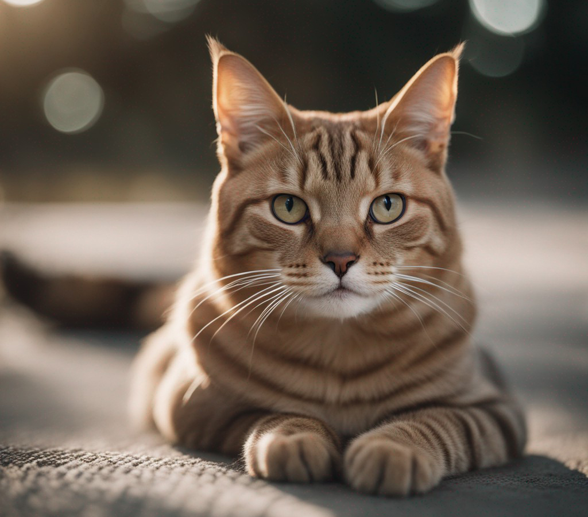

Decifrando o Enigma Felino: Compreendendo o Comportamento dos Gatos
Os gatos, com sua personalidade única e comportamento intrigante, são verdadeiros enigmas que nos desafiam a desvendar seus segredos. Ao observarmos esses felinos misteriosos, percebemos que cada movimento, miado ou ronronar carrega significados ocultos que revelam parte de sua essência.
A independência é uma das características mais marcantes dos gatos. Ao contrário de alguns animais de estimação, eles não se submetem facilmente ao comando humano. Essa independência é uma herança de seus ancestrais selvagens e ressalta a importância de oferecer-lhes espaço e liberdade para explorar o ambiente ao seu redor.
Os momentos de brincadeira dos gatos podem parecer pura diversão, mas há mais do que isso. Quando perseguem uma bolinha, atacam um arranhador ou caçam uma mosca, estão exercitando seus instintos naturais de caçadores. Essas atividades também proporcionam estímulo mental e físico, contribuindo para uma vida mais saudável e feliz.
Outro comportamento curioso dos gatos é a prática do banho diário. Essa rotina meticulosa não se trata apenas de higiene pessoal; é uma demonstração de autocuidado e uma forma de manter o pelo limpo e livre de odores, mantendo-os discretos em suas andanças noturnas.
Os gatos são exímios comunicadores, mas suas formas de expressão nem sempre são claras para nós. Eles utilizam diferentes tipos de miados para transmitir necessidades específicas, seja para pedir comida, atenção ou até mesmo para demonstrar desconforto. Observar e aprender a decifrar esses sinais é uma maneira de estabelecer uma conexão mais profunda com nossos amigos felinos.
A busca por lugares elevados é outro comportamento que intriga os tutores. Ao subirem em móveis, prateleiras ou até mesmo no alto do armário, os gatos demonstram seu instinto natural de buscar refúgio e segurança em locais elevados, onde podem observar tudo ao seu redor sem serem surpreendidos.
Apesar de toda a fama de serem animais solitários, os gatos também apreciam a companhia humana. Eles desenvolvem laços afetivos com seus tutores e, em muitos casos, procuram carinho e interação. No entanto, é importante respeitar o tempo e espaço deles, pois forçar o contato pode gerar desconforto e afastamento.
Desvendar o comportamento dos gatos é uma jornada que nos ensina a ser mais sensíveis e atentos aos detalhes. Cada felino possui sua personalidade única, e compreender suas peculiaridades nos permite criar um ambiente mais adequado e enriquecedor para eles.
Ao desvendar os mistérios que cercam os gatos, adentramos em um mundo fascinante, repleto de sutilezas e encantos. A cada dia, aprendemos mais sobre esses seres intrigantes e, ao mesmo tempo, nos encantamos ainda mais com sua complexidade e singularidade. Que a nossa convivência com os gatos seja permeada de respeito, amor e aprendizado mútuo, tornando cada dia ao lado deles uma experiência enriquecedora e inesquecível.